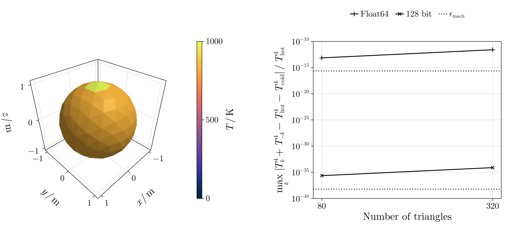
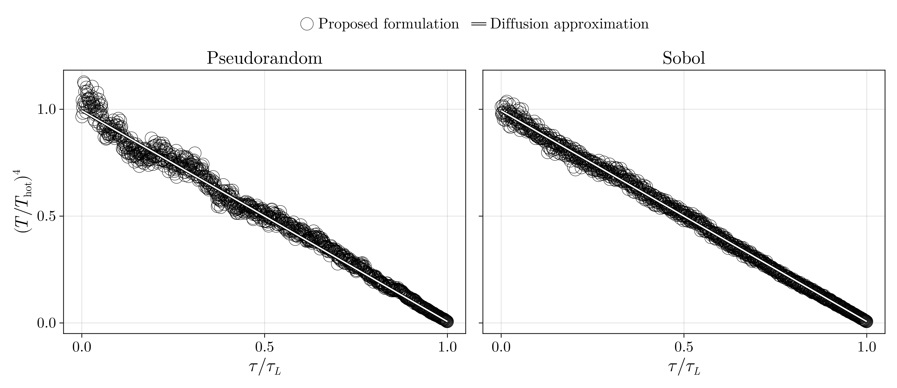

Machine-checks the discrete minimum principle, non-singularity and non-negativity of the zonal radiative-transfer linear system in Lean 4 with Mathlib, with proofs in the package repository.
Abstract
This paper proves that the zonal balances of Hottel's method, written in power variables for a first-interaction exchange factor matrix $\mathbf{F}$, have a unique and non-negative solution for any combination of prescribed temperatures and prescribed source terms in which at least one element with prescribed temperature absorbs radiation, and that they conserve energy as an algebraic identity. The results hold for media ranging from transparent to absorbing, emitting and scattering, and for boundaries ranging from absorbing to reflecting. They require only that $\mathbf{F}$ be non-negative, row stochastic and irreducible: reciprocity is not needed, so the guarantees hold for Monte Carlo exchange factors as traced, without smoothing, which the symmetric notation of the zonal method does not make apparent. Both the non-singularity and the non-negativity follow from a single discrete minimum principle, and both have been machine-checked in Lean 4. To this end the balances are written as one linear system in the total radiant powers, $\mathbf{M}\mathbf{j} = \mathbf{h}$, assembled row by row from the prescribed temperatures and source terms, with a system matrix that inherits the sparsity of $\mathbf{F}$; the total exchange areas of Noble's matrix formulation are in general dense, and the two agree symbolically and numerically to machine precision. Validation is provided symbolically against the textbook closed-form solutions for infinite parallel plates and concentric cylinders, numerically against the results of Crosbie and Schrenker for pure and partial scattering, against an exact symmetry identity in a three-dimensional enclosure, and against the diffusion approximation in an optically thick problem with about $10^6$ elements, solved in about one minute.
Problem
Hottel's zonal method for radiative transfer is often used with Monte Carlo exchange factors that are not reciprocal. No guarantees existed that its balances then have a unique, non-negative, energy-conserving solution.
Approach
The zonal balances are rewritten as a single linear system Mj = h in total radiant powers. The system is assembled row by row from a non-negative, row-stochastic, irreducible first-interaction exchange factor matrix F, so it inherits the sparsity of F. Non-singularity and non-negativity are derived from one discrete minimum principle. These results, along with spectral-radius and conservation theorems, are machine-checked in Lean 4 using Mathlib. The Lean formalization found a gap in an earlier version's proof.
Results
Uniqueness, non-negativity and energy conservation hold without reciprocity, and the formulation agrees with Noble's total exchange areas to machine precision. It matches closed-form solutions for parallel plates and concentric cylinders and the Crosbie–Schrenker scattering results. It solves a diffusion-limit problem with about 10^6 elements in about one minute.

Figure 4: Symmetry validation in a black icosphere enclosure with a hot cap at 1000 Kelvin on top, an antipodal cold cap at zero Kelvin, and all other triangles in radiative equilibrium. Left: temperature field on the icosphere of 320 triangles, each triangle coloured by its temperature with no interpolation. Right: largest deviation from the antipodal identity, equation ( 70 ), relative to T_{\ma

Figure 5: Normalized emissive power (T/T_{\mathrm{hot}})^{4} along the centre line across the gap of a 1000 m by 1 m rectangle (approximately one-dimensional), divided into 1001\times 1001 elements, against the relative optical depth from the hot wall. The medium is absorbing-emitting and non-scattering with \beta=100 ( \tau_{L}=100 ), in radiative equilibrium, with one long wall hot and all walls